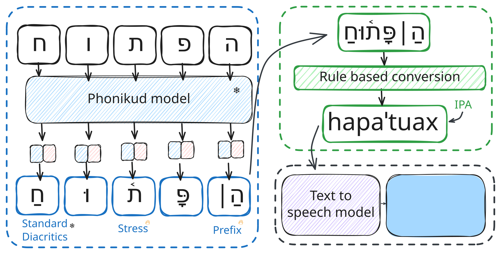

Phonikud
Hebrew Grapheme-to-Phoneme Conversion
for Real-Time
Text-to-Speech
 arXiv
arXiv

Introduction
Real-time text-to-speech for Modern Hebrew is challenging due to its complex writing system and underspecified phonetic features. Phonikud is a lightweight, open-source grapheme-to-phoneme system that produces fully-specified IPA transcriptions with minimal latency. Alongside it, we release ILSpeech, an expert-annotated Hebrew speech dataset for benchmarking and training.
What Makes Us Different
Real-Time Inference
Works with real-time TTS like Piper using IPA phonemes.
Edge Deployment
Runs locally on Raspberry Pi and edge devices.
Data-Efficient Training
Fine-tunes TTS with as little as 2 hours of data.
Hebrew Phonetics
Handles stress and vocal shva missed by others.
Assistive Tech
Low-latency screen reader support, even offline.
Open TTS Dataset
Studio-quality Hebrew speech with IPA annotations.
Open Models & Training
Weights, TTS models, and training code included.
Fine-Grained Phonetic Control
Edit phonemes directly or let G2P handle it.
From Text to Speech
See how Phonikud transforms Hebrew text through each stage.
Method Comparison
Comparative evaluation of Phonikud against existing Hebrew TTS approaches
| Text Sample |
ElevenLabs
Eleven v3
|
Google
Gemini v2.5
|
RoboShaul
1st place
|
Phonikud (Ours)
Ours v1 (alpha)
|
|---|---|---|---|---|
| הוא צפה בס֫רט וראה חיה שצ֫פה במ֫ים 🐸 | ||||
| הוא רצה את זה גם אבל היא ר֫צה מהר והקד֫ימה אותו 🏃♀️ | ||||
| בוא תרד לאכול יש בור֫קס עם ת֫רד 🥬 |
Explore More
See more resources, demos, and tools to explore Phonikud
Citation
@misc{kolani2025phonikud,
title={Phonikud: Hebrew Grapheme-to-Phoneme Conversion for Real-Time Text-to-Speech},
author={Yakov Kolani and Maxim Melichov and Cobi Calev and Morris Alper},
year={2025},
eprint={2506.12311},
archivePrefix={arXiv},
primaryClass={cs.CL},
url={https://arxiv.org/abs/2506.12311},
}